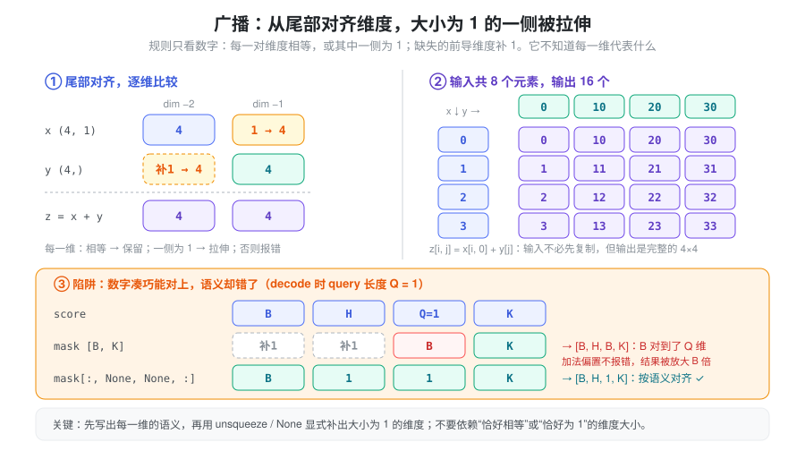
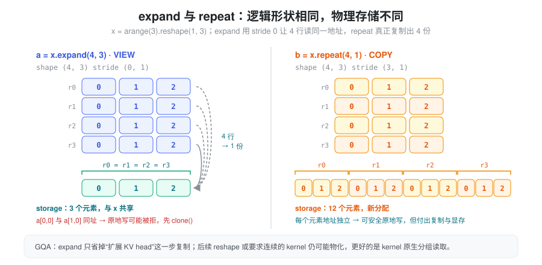
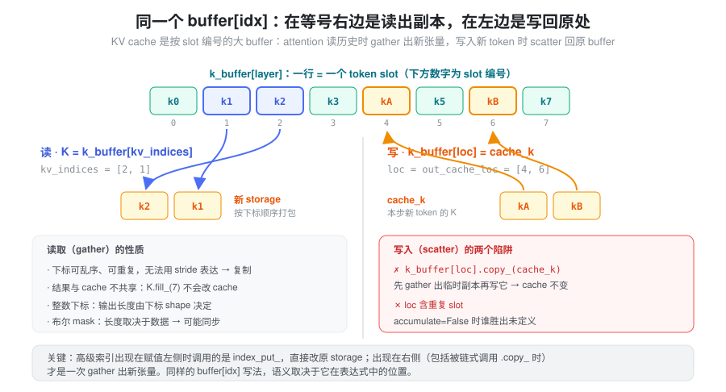
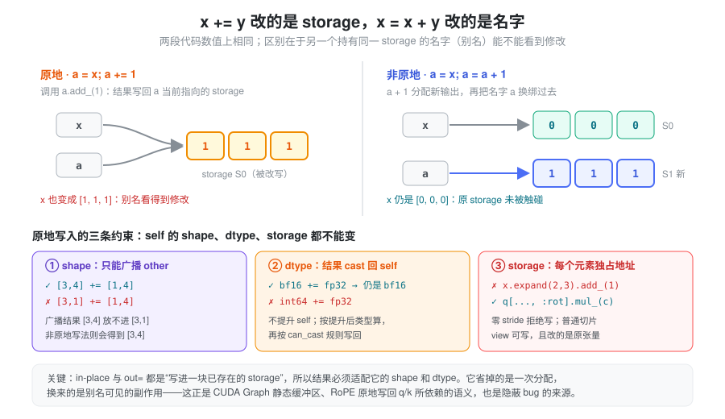
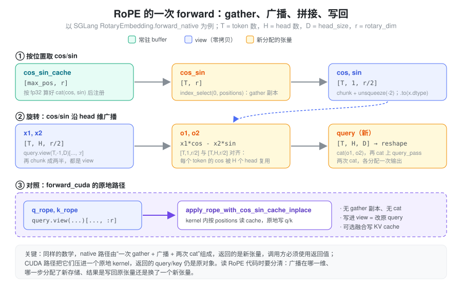

score + mask没有报错，为什么 decode 时 attention 结果整批都不对？- 都是“把 KV head 扩展到 query head
数”，
expand()和repeat()为什么显存差了好几倍？ cache[slots].copy_(values)跑完了，为什么 KV cache 里什么都没写进去？- bf16 的 attention score 加上一个 mask 之后，怎么变成了 fp32、显存还翻了一倍？
- 同样是做 RoPE，为什么一条路径必须接住返回值，另一条路径“返回的还是原来的 query”？
广播和索引代码通常只有一行，却可能隐藏三种完全不同的成本：只改变张量元数据、读取并复制数据、生成远大于输入的计算结果。它们还会悄悄改变语义——维度对错了不一定报错，写错了位置也不一定报错，dtype 变了更不会报错。在 LLM 推理里，attention mask、RoPE、GQA 的 head 扩展、beam 重排和 KV cache 更新都会遇到这些问题。
布局和共享存储的基础见 Tensor Memory。本篇关注：表达式的 shape、读写语义、结果类型和实际成本是否符合预期。
抽象：每个表达式回答四个问题
读一行广播、索引或逐元素计算代码，可以把它拆成四个彼此独立的问题：
- 形状从哪来：输出的每一维由哪个输入的哪一维决定？广播只做数字对齐，语义要靠代码自己保证。
- 存储是谁的：结果是原张量的 view（共享存储、可能零 stride）、新分配的输出，还是被原地写入的已有张量？
- 数据往哪流：
buffer[idx]出现在等号右边是读出（gather 成新张量），出现在左边是写回（scatter 到原存储）；x += y写进x的存储，x = x + y只是把名字换绑到新输出。 - 类型由谁决定：输出 dtype 由参与运算的各输入按类型提升规则共同决定；原地写入时则必须能转换回目标张量的 dtype。
四个问题分别对应四类错误：形状推错导致静默的语义错误或输出规模爆炸；存储判断错导致多余复制或非法原地写；读写方向判断错导致“写了个寂寞”或别名被意外修改；类型判断错导致精度损失或悄悄放大的显存与带宽。下面逐一展开。
广播：对齐的是维度，不是语义
广播从尾部对齐维度；每一对维度的大小必须相等，或者其中一侧为
1，缺失的前导维度按 1
处理。它不会判断某一维到底表示 batch、token 还是
head。规则见官方 Broadcasting
semantics。

import torch
x = torch.zeros(4, 1)
y = torch.zeros(4)
z = x + y
assert z.shape == (4, 4) # y 被视为 (1, 4)，不是 (4, 1)这里两个输入共八个元素，输出却有十六个。广播本身无需先复制输入，但消费广播结果的算子仍要完成相应规模的计算；普通 eager 加法也会分配输出。编译融合可能省去中间结果的存储，不能据此忽略计算规模。
图中第三部分是推理里最典型的陷阱：score 为
[batch, head, query, key]，每个请求的 key mask
为 [batch, key]。直接相加时，mask 的 batch
维对到了 query 维；decode 时 query 长度恰好为
1，于是不报错，输出却被广播成
[B, H, B, K]。应显式写成
mask[:, None, None, :] 变成
[batch, 1, 1, key]，不要依赖“恰好相等”或“恰好为
1”的维度大小。
expand 与 repeat：逻辑复用和物理复制
| 操作 | 如何扩展 | 存储与写入 |
|---|---|---|
expand() |
把大小为 1 的维度扩展，用零 stride
表达重复访问 |
共享原存储，多个逻辑元素可能指向同一地址 |
repeat() |
把数据按指定次数复制 | 分配新存储，元素独立 |
expand(...).clone() |
先逻辑扩展，再物化 | 得到可独立写入的副本 |

x = torch.arange(3).reshape(1, 3)
a = x.expand(4, 3)
b = x.repeat(4, 1)
assert a.stride() == (0, 1)
assert b.stride() == (3, 1)两者逻辑形状相同，区别全在 stride：a
的四行都读取同一行内存。对它执行需要逐元素独立写入的原地操作是不安全的，可能被
PyTorch 拒绝；应先 clone()。零 stride
和写入限制见 Tensor.expand，复制语义见
Tensor.repeat。
在 GQA 中，把 KV head 扩展到 query head
数量时，expand() 可以省去某一步复制，但后续
reshape() 是否物化、kernel 是否支持零
stride，仍需检查。不能仅凭代码出现 expand()
就认定整个路径零拷贝。支持 GQA 的 attention kernel
可以直接处理 head 分组，避免显式扩展。
索引读取与索引赋值需要分开理解
基础切片读取通常是 view，高级索引读取通常是 copy；但高级索引位于赋值左侧时，会写回原张量，不是先生成一个副本再修改副本。见 Tensor Views。

cache = torch.zeros(8, 2)
slots = torch.tensor([1, 4])
values = torch.ones(2, 2)
selected = cache[slots] # 高级索引读取：副本
selected.fill_(7) # cache 不会跟着变
cache[slots] = values # 高级索引赋值：写回 cache原因在于 Python
的求值方式：cache[slots] = values
会被翻译成一次 __setitem__，PyTorch 据此调用
index_put_ 直接修改原存储；而
cache[slots].copy_(values) 先执行
__getitem__ 得到 gather 出的临时副本，再对副本
copy_，cache 不变。读写方向由
buffer[idx]
在表达式中的位置决定，而不是由后面跟着什么方法决定。这正对应
KV cache 中“gather 得到的 K/V”和“向 slot 写入新
K/V”的区别。
如果写入下标重复，不能把并发写入想象成 Python
循环里稳定的“最后一次覆盖”。index_put_ 在
accumulate=False
时对重复下标的行为未定义；累加也需另行考虑浮点归约顺序。见
Tensor.index_put_。
动态索引还可能带来同步
整数下标张量的元素数量已由元数据给出；布尔 mask 的选中数量则取决于数据内容。因此不能把所有高级索引都理解成同样的固定成本操作。
CUDA 上的 torch.nonzero() 会引入 host-device
同步，布尔 mask
索引需要先知道选中数量，也会有类似效果。decode 热路径中的
mask.nonzero()，可能既生成动态长度结果，又让
CPU 等待 GPU，还会妨碍 CUDA Graph 捕获。见 torch.nonzero
和 CUDA
异步执行。
In-place 与 out=：写进一块已存在的存储
非原地运算 x = x + y
做两件事：分配新输出，再把 Python 名字 x
换绑过去，原 storage 不受影响。原地运算
x += y（即 x.add_(y)）则把结果写回
x 当前指向的
storage。两者数值相同，差别只在别名：如果还有别的张量与
x 共享这块 storage——另一个名字、一个切片
view、一个被缓存起来的输入——原地写会让它们一起变。

“写进已存在的存储”决定了原地运算的三条约束，它们都在说：self 的 shape、dtype 和存储布局不能因为这次运算而改变。
- shape：广播只能作用在另一侧。
[3, 4] += [1, 4]可以，[3, 1] += [1, 4]会报错，因为广播结果[3, 4]放不进[3, 1]；同样的表达式写成非原地形式则静默得到[3, 4]。 - dtype：self
不会被提升。运算仍按提升后的公共类型进行，再转换回 self 的
dtype，且必须满足
torch.can_cast：bf16_x += fp32_y合法，结果仍是 bf16；int64_x += fp32_y报错，因为浮点不能隐式写回整数。见 Type promotion。 - 存储：被写入的每个逻辑元素必须对应独立地址。
expand()出的零 stride view 会被拒绝（“more than one element of the written-to tensor refers to a single memory location”）；普通切片 view 可以写，且写的就是原张量。
out=
参数遵循同样的规则：输出写进调用方给定的张量，结果 dtype
必须能转换过去，shape
不符时会被调整大小（并给出警告）或报错。它和原地运算的共同价值在于地址不变——CUDA
Graph 的静态输入缓冲区依赖 buf.copy_(new)
而不是 buf = new，正是这个原因（见 Kernel
与编译执行）。
原地运算省掉的是一次输出分配，不减少计算量，也不减少对输入的读取；它还可能迫使调用方额外
clone()
来保护仍要使用的旧值。判断是否该用原地写，应先回答“还有谁持有这块
storage”。
隐式拷贝与隐式类型转换
除了显式的
clone()、contiguous()，下面这些写法也会分配新存储，而代码上未必看得出来：
| 写法 | 为什么会复制 | 推理里常见的位置 |
|---|---|---|
torch.cat / torch.stack |
输出需要一块能同时容纳所有输入的新连续存储，无法用一组 stride 拼出 | RoPE 的 rotate_half、拼接 rot
与 pass 部分 |
布尔 mask 读取 x[mask] |
gather 成新张量，长度依赖数据，还可能同步 | 过滤无效 token |
.to(dtype)、混合 dtype 运算 |
新 dtype 需要新存储；提升后的输出按更宽的类型分配 | mask 与 score 相加、cos/sin 转换 dtype |
| 非连续输入交给要求连续的 kernel | 算子内部可能先物化一份连续副本 | transpose 后的 QKV 交给自定义 kernel |
还有一个反向的隐式行为：逐元素算子的输出通常沿用输入的布局。对转置后的
[8, 4] 张量执行 x + 1，输出 stride
仍可能是 (1, 8)，即
算子输出不保证连续。
类型提升在表达式里的位置值得单独留意：Python 标量和 0
维张量通常不会把同类别的张量提升到更宽的类型（bf16_tensor * 2.5
仍是 bf16）；两个不同 dtype
的多维张量相遇时，结果取更宽的那个（bf16 + fp32
得到 fp32）；布尔张量与 Python
浮点数相乘，结果取默认浮点类型（通常是
fp32）。因此只要表达式中混入了一个 fp32
张量，后续所有中间结果都可能变成
fp32——数值更精确，但显存和带宽也随之翻倍。格式范围、累加精度和
autocast 的规则见 dtype 与数值精度
和 Tensor 数据类型。
在 SGLang 中：Attention Mask 的广播与类型
attention score 的形状是
[B, H, Sq, Sk]，mask
一般不按这个形状存：按样本区分、各 head 共享时是
[B, 1, Sq, Sk]，所有样本共用一张因果 mask 时是
[1, 1, S, S]，相加或交给 SDPA 时再广播到 head
和 batch 维。mask 有两种表示，语义相反、容易混用：
- 布尔 mask：交给 SDPA 的
attn_mask时True表示允许参与 attention； - 加性 mask：一个浮点张量，允许的位置为
0，屏蔽的位置为一个很大的负数，直接加到 score 上。
加性 mask 的“很大的负数”不宜随手写
-inf：如果某一行全部被屏蔽（例如 padding 出来的
query 行），softmax 会得到
-inf - (-inf)，整行变成 NaN；用
torch.finfo(dtype).min
则得到一行有限的均匀分布，padding
行的输出事后丢弃即可。此外加性 mask 本身有 dtype，和 score
的 dtype 不一致就会触发类型提升。
layers/attention/vision.py 中的
VisionSdpaAttention 把这几点都用上了：
- 用广播构造 mask。
_generate_mask_cache()把row_indices设为[1, 1, 1, s]、col_indices设为[1, 1, s, 1]、每个样本的长度seq_lens设为[b, 1, 1, 1]，一句(row_indices < seq_lens) & (col_indices < seq_lens)就广播出[b, 1, s, s]的布尔 mask——第二维的1留给 head 维广播。flatten_batch时则先建[1, s, s]全 False，再用切片赋值把每段[start:end, start:end]置 True。该函数带lru_cache，以cu_seqlens的 tuple 为键；生成这个 tuple 需要cu_seqlens.cpu().tolist()，若cu_seqlens在 GPU 上，这是一次同步。 - SDPA 路径直接传布尔
mask，
is_causal=False，广播由 SDPA 内部处理。 - 单精度 softmax 路径改成加性 mask。
softmax_in_single_precision为真时执行attention_mask = (~attention_mask) * torch.finfo(q.dtype).min，再attn_weights + attention_mask。这里有两次隐式行为：布尔张量乘 Python 浮点数得到默认浮点类型（fp32）的[b, 1, s, s]；它与 bf16 的attn_weights相加时既沿 head 维广播，又把整个[b, h, s, s]的结果提升为 fp32。随后softmax(..., dtype=torch.float32).to(q.dtype)再转回。对这条“单精度 softmax”路径来说提升符合意图，但它的代价是一个完整的 fp32 score 张量，这是把 mask 放进加法而不是交给融合 kernel 的成本。
在 SGLang 中：RoPE 的广播与写回
RoPE 把每个 token 位置对应的 cos/sin 作用到 q、k 的前
rotary_dim
维上。它同时用到了本篇的每一个概念：按位置 gather、沿 head
维广播、cat 的隐式分配，以及原地写回。实现在
layers/rotary_embedding/：base.py
的 RotaryEmbedding，以及 utils.py
中的基础函数。

- cos/sin 表与 gather。
_compute_cos_sin_cache()用 fp32 算出cat((cos, sin), dim=-1)，形状[max_pos, rotary_dim]，作为非持久 buffer 注册为cos_sin_cache。forward_native()用cos_sin_cache.index_select(0, positions)取出本批 token 的行，这是一次 gather 副本，形状[T, rotary_dim]，随后chunk(2, dim=-1)切出 cos、sin 两个 view。 - 沿 head 维广播。
utils.py的apply_rotary_emb()中，x是[num_tokens, num_heads, head_size]，cos/sin 是[num_tokens, head_size // 2]；cos.unsqueeze(-2)把它变成[T, 1, r/2]，与[T, H, r/2]的x1、x2广播相乘——每个 token 的一行 cos 被所有 head 复用，不需要repeat。同一行的.to(x.dtype)先把 cos/sin 转成 q 的 dtype，避免 fp32 表把整个旋转结果提升成 fp32。同文件的apply_rotary_pos_emb_native_eager()则相反，显式q.float()后在 fp32 中计算再转回：计算精度是代码选择的，不是自动发生的。 cat的隐式分配。 Neox 风格下torch.chunk(x, 2, dim=-1)得到两个 view，o1 = x1 * cos - x2 * sin等是新输出，torch.cat((o1, o2), dim=-1)再分配一次；forward_native()又用torch.cat((query_rot, query_pass), dim=-1)拼回不旋转的部分。rotate_neox()、HF 风格的rotate_half()也都以cat结尾。所以 native 路径返回的是新张量，调用方必须使用返回值。- CUDA 路径原地写回。
forward_cuda()在不使用 fallback kernel 时，取query.view(batch_size, -1, self.head_size)，若head_size != rotary_dim再切[..., : self.rotary_dim]——都是 view；然后调用apply_rope_with_cos_sin_cache_inplace()（来自sglang.kernels.ops.attention.rope），在一个 kernel 内按positions读cos_sin_cache、原地写回 q/k，没有 gather 副本也没有cat。因为写的是 view，改动直接落在原query/key上，函数最后return query, key返回的仍是原对象。传入fused_set_kv_buffer_arg时，这个 kernel 还会顺带把 k/v 写进 KV cache。
在 CUDA 上，forward_native()
只在特定条件下使用：设置了 deterministic 的
rl_on_policy_target 或运行在 MUSA
上时，RotaryEmbedding 把它选为 forward，并用
torch.compile 包装
apply_rotary_emb，让其中那串逐元素运算和
cat 有机会融合；CPU、NPU
等后端在部分条件下也会回落到它。
在 SGLang 中：KV cache 的一读一写
SGLang 的 KV cache 正是图中那个“按 slot 编号的大
buffer”，读写两侧分别落在不同模块（基于当前
python/sglang/srt/）：
- 写：索引赋值，必要时换成专用 kernel。
mem_cache/memory_pool.py中MHATokenToKVPool.set_kv_buffer()从loc_info解出本步新 token 的 slot（即forward_batch.out_cache_loc），交给_set_kv_buffer_impl()。CUDA/HIP 上行宽满足条件时调用store_cachekernel；否则回落到最朴素的k_cache[indices] = k、v_cache[indices] = v——赋值左侧的高级索引，直接写原存储。CUDA Graph 捕获模式下还会把 V 的写入放到另一条 stream 上，与 K 的写入并行，再用wait_stream接回。同文件里还有一处细节：fp8 KV 以torch.uint8存储，注释说明原因是index_put不支持float8_e5m2。 - 读：先切片得到下标，再 gather。
layers/attention/torch_native_backend.py逐请求执行per_req_tokens = req_to_token[req_pool_idx, start_kv:end_kv]——这是普通切片，拿到的是 slot 编号的 view；随后k_cache[per_req_tokens]是高级索引读取，复制出该请求的 K/V，再用movedim调整维度顺序（view，不复制）。这一读一写的复制成本，是这个后端只适合做对照与兜底的原因之一（见 Kernel 与编译执行）。 - GQA 不显式扩展。 同一后端用
use_gqa = layer.tp_q_head_num != layer.tp_k_head_num判断是否分组，并把它作为enable_gqa传给 SDPA，由 attention 实现处理 head 分组，而不是先expand/repeatKV head。
高性能后端（FlashInfer、FlashAttention 等）则把
kv_indices 或 page table 直接交给 kernel，在
kernel 内部按下标读取，避免先 gather 出完整 K/V；KV
池的组织方式见 Memory Pool 与
Paged Attention。
读代码时的检查顺序
- 写出输入、输出每一维的语义，而不只看数字。
- 判断广播后的结果规模；可以先用
torch.broadcast_shapes()检查。 - 区分 view、复制读取与写回原张量；看
buffer[idx]在等号的哪一侧。 - 遇到原地运算或
out=，确认还有谁共享这块 storage，以及结果能否放进它的 shape 和 dtype。 - 写出每个中间结果的 dtype，找出混入的 fp32 张量和
cat、.to()这类隐式分配。 - 检查零 stride、重复下标和动态输出长度。
- 检查后续 kernel 是否要求物化，是否出现隐式同步。
小结
广播、索引和逐元素运算的每一行代码都同时回答了四个问题：形状从哪来、存储是谁的、数据往哪流、类型由谁决定。广播减少输入复制，并不自动减少输出规模，也不检查维度语义；expand
省掉复制，却换来零 stride 和写入限制；同样的
buffer[idx]，在等号左边是写回原存储，在右边是
gather 出的副本；x += y
让别名看到修改，x = x + y
只是换绑名字；一个混入的 fp32
张量就能让整条表达式变宽。Attention mask 和 RoPE
把这些规则集中在了几行代码里：把 shape 推导、存储读写和
dtype 一起看，才能判断推理代码是否既正确又高效。